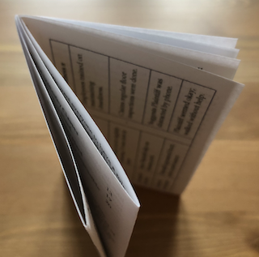

Mini-Zine Maker
I wanted to make mini-zines (16-page booklets made from a single sheet of paper) for LITCon2025, and I couldn't find a simple template online. So, I made this tool to parse text and handle page placement. To insert a page break use <page_break>. You can use standard HTML to add style and images along with the built-in page_number class (e.g., <p class="page_number">1</p>). If you want to play with fonts, margins, and the like, you can fork this project and edit the CSS. If you add more than 16 pages of content, additional sheets of paper will be added to the printable document. When printing, select portrait mode with two-sided print and long-edge binding.
|  Fold |
![The image shows four views of a small folded zine-style booklet titled *Law RPG Beginner’s Handbook* by David Colarusso, laid flat on a wooden surface. Each booklet page is visible, arranged to display its contents. The front cover includes a 20-sided die illustration and a subtitle. Inside pages feature game instructions, sample dialogue mimicking courtroom scenes (labeled “JUDGE” and “ATTORNEY”), rules on ability checks, case sheets, roles, and a QR code linking to an interactive helper. One section breaks down missions, objectives, and outcomes in a tabular format, suggesting a tabletop RPG-style gameplay experience themed around courtroom law. The booklet appears to be an educational or satirical take on combining role-playing mechanics with legal procedures.](images/cut.png) Cut |
![The image shows a small DIY booklet titled *Law RPG Beginner’s Handbook* being stapled along the fold with a red Swingline stapler. The booklet is opened to display the back cover and inside back page, which includes a QR code labeled “Interactive Helper” and instructions for accessing online resources. The front cover features a 20-sided die illustration and the author’s name, David Colarusso. The booklet rests on a wooden surface, and the lighting is soft, creating a warm, casual crafting atmosphere. This moment captures the final step of assembling a printed zine or mini-handbook, emphasizing its homemade, accessible nature.](images/staple.png) Staple |
![The image shows a close-up of a hand holding a small, homemade booklet titled *Law RPG Beginner’s Handbook* by David Colarusso. The cover features a black-and-white illustration of a 20-sided die (commonly used in tabletop role-playing games), reinforcing the theme of combining legal education with RPG mechanics. The booklet is neatly folded and stapled along the spine, with visible page edges, indicating it has been freshly assembled. The background is a wooden surface, and the overall scene conveys a DIY, educational, and playful approach to learning about law through interactive storytelling.](images/share.png) Share |
Edit Zine Text/HTML
Print Preview